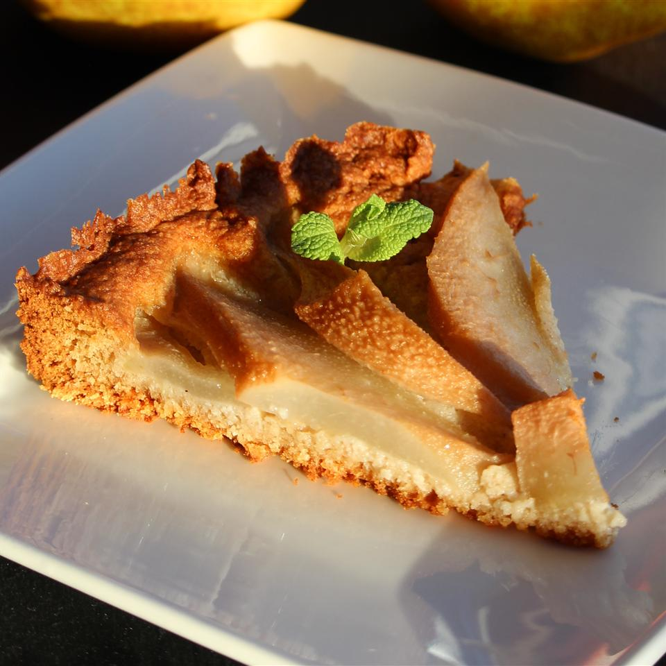

Pear and Almond Tart (Dairy and Gluten-Free)

Description
An easy non-dairy and gluten-free recipe for a classic pear and almond tart, first discovered on allrecipes.com. The picture alone is worth trying this recipe.
Ingredients
- 1 1/4 cups almond meal
- 1/4 cup gluten-free oat flour
- 1/2 tsp gluten-free baking powder
- 1 egg, beaten
- 1/4 cup maple syrup
- 2 tbsp coconut oil, melted
- 1 tsp vanilla extract
- 1/4 tsp sea salt
- 1/4 tsp almond extract
- 1 1/2 (16 oz) cans pear halves, drained and patted dry
Directions
- Preheat oven to 350 degrees F. Grease bottom of tart pan with a removable bottom and line with parchment paper.
- Mix almond meal, oat flour, and baking powder together in a bowl.
- Whish egg, maple syrup, coconut oil, vanilla extract, salt, and almond extract together in a separate bowl.
- Fold in almond meal mixture with wet ingredients to form a sticky dough.
- Press dough into the prepared tart pan. Arrange pears on top.
- Bake in preheated oven until golden brown, 22 to 25 minutes.
Home